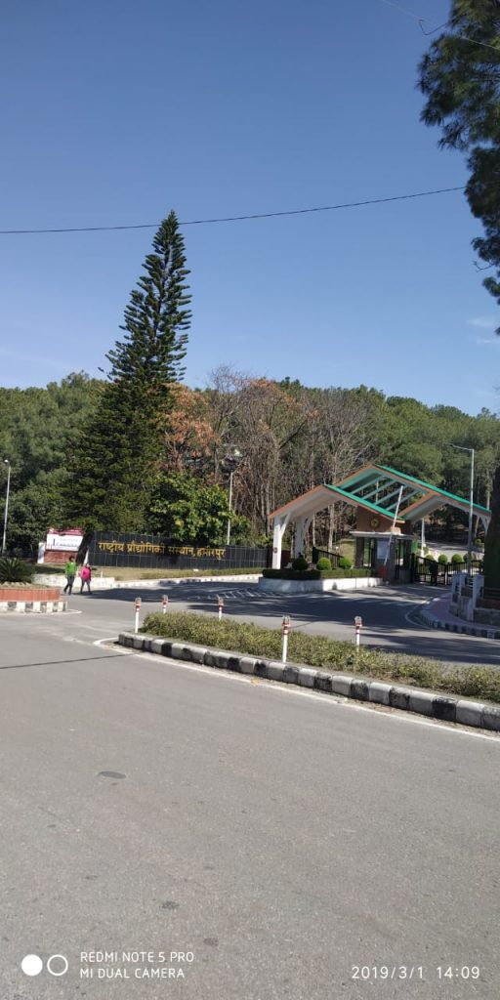

Our Global Institutes
IIT's, NIT's and IIIT's Institutes are under the aegis of Ministry of Education, Govt. of India
IIT

NIT

(An autonomous Institute under the aegis of Ministry of Education, Govt. of India)
Visit Us To KnowFollowing Courses Are Offered By Our Institute.
National Institute of Technology AndhraPradesh is premier engineering college in India offering admission to degree courses at Undergraduate (B.Tech) level based on JEE(Joint Entrance Examination) Mains.
National Institute of Technology AndhraPradesh is premier engineering college in India offering admission to degree courses at Postgraduate (M.Tech) level based on GATE (Graduate Aptitude Test in Engineering) Exam.
National Institutes of Technology (NIT) accept applications from aspirants for PhD programs in NIt's twice a year for academic (June to July) and (January to December) calender year respectively.
IIT's, NIT's and IIIT's Institutes are under the aegis of Ministry of Education, Govt. of India
We provide the most sophisticated facilities to bring out the untapped potential of our bright students of NIT AndhraPradesh.

Dr. B R Ambedkar Central Library, Library buildings often provide quiet and conducive areas for studying, we provide countless resources, such as educational materials, trainings, courses, scientific publications, and provide public facilities etc.

A sports complex is a group of sports facilities. For example, there are track and field stadiums, football stadiums, baseball stadiums, swimming pools, and Indoor arenas. This area is a sports complex, for fitness.

The Dokka Seethamma Canteen, it contains organic food, having a meal policy, number of daily lunch meals served, serving system and outsourced to external contractors vs. those operated by the National Institute Of Technology, AndhraPradesh.
Students review based on Placements, Infrastructure, Faculty & Course Curriculum, Crowd & Campus Life, Value for Money e.t.c.,
Our college is trying its best to place everyone, and I think more than 50% of the students are easily getting placements. Top companies are of software development only like Deloitte, Infosys, TCS, etc. Most of the internships offered are paid. We need to learn from them and keep ourselves good in the subject.
The teaching is excellent in NIT, Andhra Pradesh. Labs are conducted almost every working day. Teachers here help you with any of your doubts. They also give you guidance about your projects, internships, etc. The course curriculum is relevant. There are a sports ground, an indoor stadium and also a gym.
Faculty review based on student performance on various activities like placements, project works and higherstudies e.t.c.,

Our Institute NIT AndhraPradesh conduct projects for the better understanding of the practical approach towards the subject in the real world. And the project involves a lot of tasks like abstract or synopsis evaluation, thesis correction and updating the proposed module with our guidence in Mentoring programs and Action research.
We are traditionally responsible for planning and delivering curricula and instruction consistent with the educational goals of the institution and selecting and evaluating probationary faculty members in our college NIT AndhraPradesh. we have to develop Intervention by professional consultants, Workshops, seminars and courses.